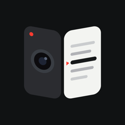

OutCue
台本を見ながら、そのまま撮影できるプロンプター＆録画アプリ
使い方
台本を用意する
- 台本の一覧の右上の＋から、新しい台本を作ります。
- 「クリップボードから貼り付け」で、ほかのアプリで書いた台本をそのまま入れられます。
- 改行はそのままプロンプターの改行になります。
- 「＝＝＝＝ オープニング ＝＝＝＝」のように＝で囲んだ行は見出しになります。
- 台本を右にスワイプすると編集、長押しすると削除できます。
撮影する
- 台本をタップすると撮影画面が開きます。
- 赤い録画ボタンで録画の開始・停止をします。設定で3秒のカウントダウンも付けられます。
- 録画した動画は「写真」アプリに保存されます。
- カメラの切り替えボタンで、背面カメラとインカメラを切り替えます。
- メニューボタン（つまみが3本並んだアイコン）から、ズーム・解像度・フレームレート・グリッドなどを変えられます。
台本をスクロールする
- 再生ボタン、または台本をタップすると、スクロールが始まり、もう一度で止まります。
- 指で台本をなぞると、読む位置を手で合わせられます。
- メニューの「3行戻す」「先頭に戻る」で読み直せます。速度もメニューや設定で変えられます。
- 設定で「録画開始と同時にスクロール」をオンにすると、録画と一緒に流れ始めます。
声に合わせて送る
- メニューか設定の「送り方」を「声に合わせる」にすると、話している声を聞き取って、読んでいるところまで台本を送ります。
- マイクのボタンで聞き取りを始め、もう一度押すと止まります。「録画開始と同時にスクロール」がオンなら、録画と一緒に始まります。
- 言い直しや少しの読み飛ばしにはついていきます。大きくずれたときは、指で台本をなぞって合わせると、そこから聞き取り直します。
- 見出しの行は読まなくてかまいません。
- 日本語と英語の台本に対応しています。どちらの言語で聞き取るかは、台本から自動で決めます。
- 音声認識はこの iPhone の中だけで行い、声を外部に送ることはありません。
ボタンで操作する
- 撮影画面では、音量ボタンやカメラコントロールを押すと録画の開始・停止ができます。
- ロックボタンを押すと、誤って画面に触れても操作されなくなります。解除はロックボタンを長押しします。
- ロック中でも、録画の停止と、指でのスクロール位置の調整はできます。
- 設定の「録画中は自動でロック」がオンなら、録画を始めると自動でロックされます。
カメラコントロールから起動する
- 「設定」アプリの「カメラ」→「カメラコントロール」で、起動するアプリに「OutCue」を選びます。
- カメラコントロールを押すと、いちばん最近編集した台本の撮影画面がすぐに開きます。
- コントロールセンターに「OutCue」のボタンを追加して、そこから開くこともできます。
iPhone Duo で使う
- 開いているときは、内側の画面の左にカメラのプレビュー、右に台本が出ます。
- 閉じると、外側の画面に台本とプレビューが出るので、背面カメラで自分を撮りながら台本を読めます。外側の画面の下の真ん中にある録画ボタンでも録画できます。
- 閉じているときのカメラは、背面とアウターのインカメラの切り替えです。インナーのインカメラで撮っている途中で閉じると、アウターのインカメラに切り替わります。
- ケースのヒンジの保護パーツが外側の画面にかぶるときは、設定の「ヒンジ側の余白」で表示を内側に寄せます。
- 外側の画面を使わないときは、設定の「外側の画面に台本を出す」をオフにします。
言語を切り替える
- 設定の「言語」で、日本語・英語・iPhone の言語に合わせる、から選べます。アプリを一度終了して開き直すと切り替わります。
よくある質問
録画した動画が「写真」に保存されません
「設定」アプリ →「OutCue」→「写真」で、「写真を追加のみ」以上を選んでください。カメラとマイクも、同じ画面でオンになっているか確認してください。
カメラコントロールの一覧に出てきません
本アプリを一度起動してから、もう一度「設定」アプリの「カメラ」→「カメラコントロール」を開いてください。カメラコントロールのない機種では使えません。
音量ボタンで録画すると、音量も変わってしまいます
撮影画面を開いている間は、音量ボタンは録画の開始・停止に使われ、音量は変わりません。台本の一覧や設定画面では、ふつうの音量ボタンとして働きます。
外側の画面のプレビューが逆さま・横向きになります
設定の「プレビューの向き補正」で向きを変えられます。プレビューだけが変わり、録画される映像には影響しません。
台本や動画はどこかに送られますか？
いいえ。台本と録画した動画は、お使いの iPhone の中だけに保存されます。詳しくはプライバシーポリシーをご覧ください。
お問い合わせ
不具合やご要望は、X（旧Twitter）の @ichigochan_nel までお寄せください。お使いの機種と iOS のバージョン、どの画面で何をしたときに起きたかを書いていただけると助かります。
YouTube：いちごちゃんねる